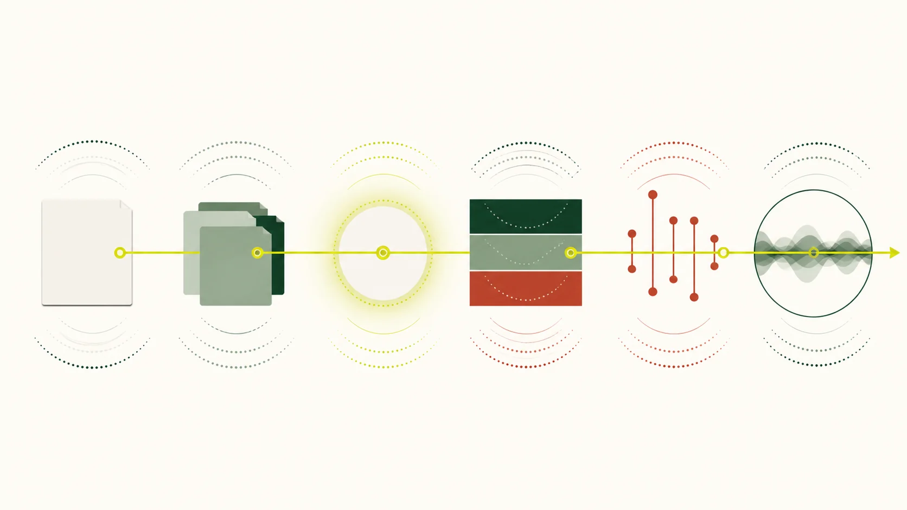

曲目研讀
一首曲，不止一種讀法。
曲名相同，版本未必相同。循作品背景、樂段與演奏手法細讀，留意改編者、記譜者和演奏者各自留下的痕跡。完整樂譜及錄音須回原站查閱取用條件。
曲目資料索引
查看本批 10 個規劃頁面
- 《喜相逢》 L2
- 《五梆子》 L2
- 《鷓鴣飛》 L2
- 《姑蘇行》 L2
- 《三五七》 L2
- 《早晨》 L2
- 《蔭中鳥》 L2
- 《牧民新歌》 L2
- 《揚鞭催馬運糧忙》 L2
- 《帕米爾的春天》 L2
主題插圖（非教學圖）

曲目研讀
曲名相同，版本未必相同。循作品背景、樂段與演奏手法細讀，留意改編者、記譜者和演奏者各自留下的痕跡。完整樂譜及錄音須回原站查閱取用條件。
